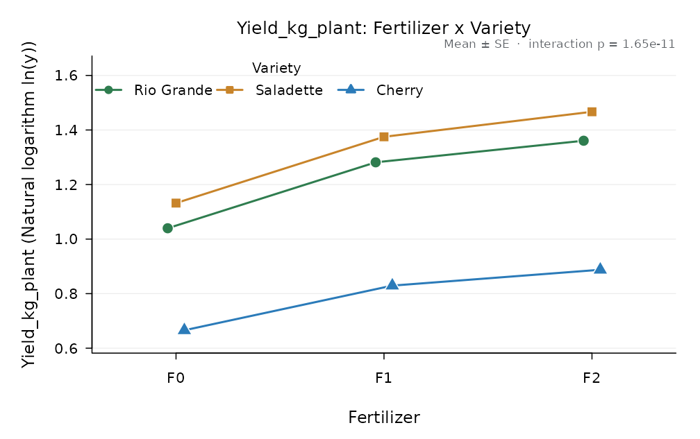
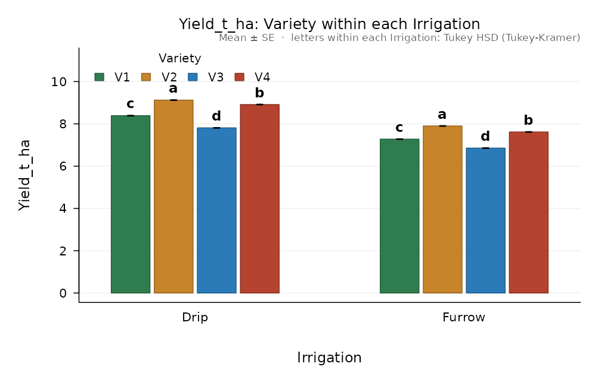
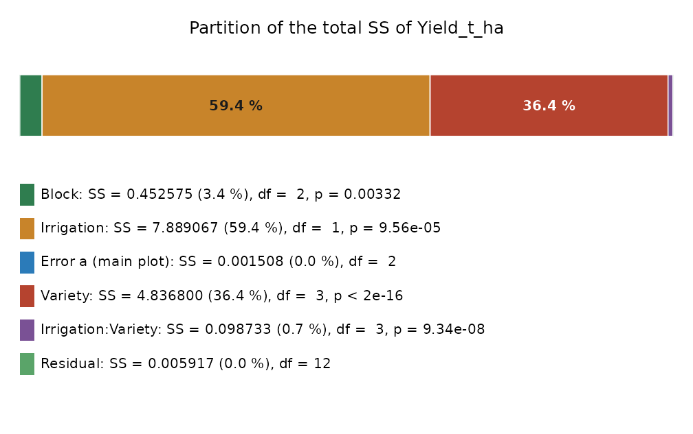
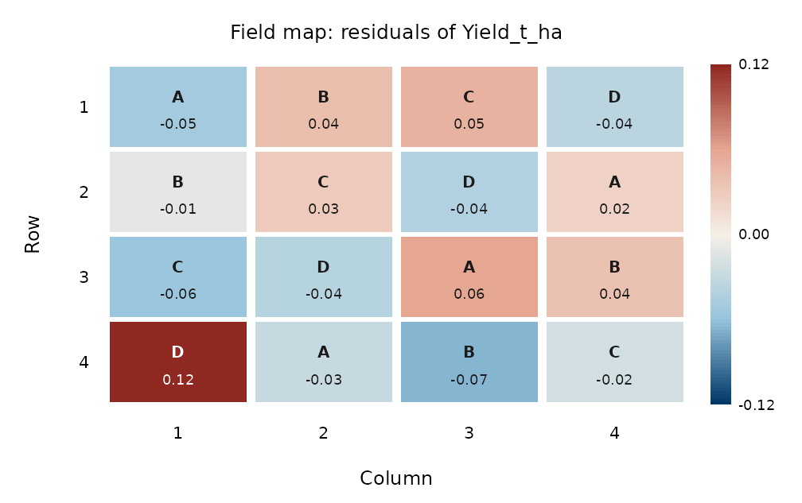

The model of a design is not only a list of terms: each term has to be tested against the variation of the experimental units to which it was applied. This vignette shows how AgriDesign handles that in the common designs of agricultural research.
Factorials
All combinations of two or more factors, here three tomato varieties by three fertiliser levels in complete blocks:
fit <- design_anova(tomato_factorial, "Yield_kg_plant", c("Variety", "Fertilizer"),
block = "Block", transform = "log")
fit
#>
#> Factorial in RCBD
#> Response: Yield_kg_plant, transformed: Natural logarithm ln(y) (n = 27)
#> Type III sums of squares
#>
#> Df Sum Sq Mean Sq F value Pr(>F)
#> Block 2 0.0222491 1.112e-02 408.8 1.843e-14 ***
#> Variety 2 1.4349195 7.175e-01 26363.3 7.172e-29 ***
#> Fertilizer 2 0.4143318 2.072e-01 7612.4 1.475e-24 ***
#> Variety:Fertilizer 4 0.0122763 3.069e-03 112.8 1.654e-11 ***
#> Residuals 16 0.0004354 2.721e-05
#> ---
#> Signif. codes: 0 '***' 0.001 '**' 0.01 '*' 0.05 '.' 0.1 ' ' 1
#>
#> Grand mean = 1.11537 CV = 0.47 % R-squared = 0.9998With a significant interaction, the main effects are averaged over levels that behave differently; compare one factor within each level of the other (simple effects):
compare_means(fit, "Fertilizer", by = "Variety")
#>
#> Tukey HSD (Tukey-Kramer), alpha = 0.05
#> Response: Yield_kg_plant compared: Fertilizer within each level of Variety
#> Error: Residual error (MS = 2.721e-05, df = 16)
#> Minimum significant difference = 0.01099
#>
#> Variety Fertilizer n mean se raw_mean sd back_transformed group
#> Rio Grande F2 3 1.3606 0.003012 1.3606 0.03220 3.899 a
#> Rio Grande F1 3 1.2815 0.003012 1.2815 0.03229 3.602 b
#> Rio Grande F0 3 1.0398 0.003012 1.0398 0.03957 2.829 c
#> Saladette F2 3 1.4668 0.003012 1.4668 0.03248 4.335 a
#> Saladette F1 3 1.3750 0.003012 1.3750 0.03466 3.955 b
#> Saladette F0 3 1.1320 0.003012 1.1320 0.03751 3.102 c
#> Cherry F2 3 0.8876 0.003012 0.8876 0.03099 2.429 a
#> Cherry F1 3 0.8294 0.003012 0.8294 0.04215 2.292 b
#> Cherry F0 3 0.6657 0.003012 0.6657 0.03601 1.946 c
#>
#> Means sharing a letter do not differ (letters valid within each level).
plot_interaction(fit, "Fertilizer", "Variety")
Because the analysis was done on the log scale, the tables also report the back-transformed means.
Split-plots and strip-plots
Irrigation systems are hard to apply to small plots, so they go on main plots; varieties go on sub-plots inside them. The main-plot factor is compared with the variation among main plots (Error a), the rest with the sub-plot error:
sp <- design_anova(split_irrigation, "Yield_t_ha", c("Irrigation", "Variety"),
block = "Block", design = "split_rcbd")
sp
#>
#> Split-plot in RCBD (main plots in blocks)
#> Response: Yield_t_ha (n = 24)
#> Type III sums of squares
#>
#> Df Sum Sq Mean Sq F value Pr(>F)
#> Block 2 0.452575 0.2262875 300.05 3.322e-03 **
#> Irrigation 1 7.889067 7.8890667 10460.64 9.558e-05 ***
#> Error a (main plot) 2 0.001508 0.0007542
#> Variety 3 4.836800 1.6122667 3269.95 9.749e-18 ***
#> Irrigation:Variety 3 0.098733 0.0329111 66.75 9.343e-08 ***
#> Error (residual) 12 0.005917 0.0004931
#>
#> Tested against a higher error stratum:
#> Block vs Error a (main plot)
#> Irrigation vs Error a (main plot)
#> ---
#> Signif. codes: 0 '***' 0.001 '**' 0.01 '*' 0.05 '.' 0.1 ' ' 1
#>
#> Grand mean = 7.985 CV = 0.28 % R-squared = 0.9996Compared as if it were a factorial in blocks, the F of irrigation would be inflated, because the sub-plot error is much smaller than the variation among main plots. Simple effects use the right error in each direction: Error b for varieties within an irrigation system, and the pooled error with Satterthwaite degrees of freedom for irrigation within a variety.
compare_means(sp, "Variety", by = "Irrigation")$error$label
#> [1] "Error b (sub-plot)"
compare_means(sp, "Irrigation", by = "Variety")$error
#> $ms
#> [1] 0.0005583333
#>
#> $df
#> [1] 10.68707
#>
#> $label
#> [1] "pooled error [(b-1)Eb + Ea]/b with Satterthwaite df"
plot(compare_means(sp, "Variety", by = "Irrigation"))

design = "strip_rcbd" (three error strata) and
"splitsplit_rcbd" work in the same way.
Latin and Graeco-Latin squares
Two blocking directions, rows and columns:
lt <- design_anova(wheat_latin, "Yield_t_ha", "Treatment", row = "Row", col = "Column")
lt$design
#> [1] "latin"
plot_field(lt, value = "residuals")
A Graeco-Latin square adds a third blocking factor, given as
block; a Youden square (an incomplete Latin square) is
suggested when the columns do not hold every treatment.
Incomplete blocks
When there are more treatments than plots in a block, the blocks are incomplete. The intra-block analysis adjusts the treatment means for the blocks:
bib <- design_anova(bib_sorghum, "Yield_t_ha", "Hybrid", block = "Block")
bib$design
#> [1] "bib"
ls_means(bib, "Hybrid")[, c("Hybrid", "mean", "se")]
#> Hybrid mean se
#> 1 H1 6.543333 0.171008
#> 2 H2 6.617619 0.171008
#> 3 H4 7.213333 0.171008
#> 4 H3 6.346190 0.171008
#> 5 H5 6.729048 0.171008
#> 6 H6 5.979048 0.171008
#> 7 H7 7.114762 0.171008If the blocks are a random sample of field conditions, the block
totals also carry information on the treatments.
recover_interblock() estimates the block and error
variances by REML and combines both sources:
recover_interblock(bib)
#>
#> Recovery of inter-block information (REML)
#> Incomplete blocks without replicate grouping (BIBD, cyclic), intra-block analysis
#> Variance components: blocks = 0.4998, error = 0.07047
#> Average SE of a difference: combined 0.2442, intra-block 0.2458
#> Relative efficiency of the combined analysis: 101.3 % of the intra-block analysis
#>
#> level n mean se intra_mean
#> H1 3 6.541 0.3167 6.543
#> H2 3 6.611 0.3167 6.618
#> H4 3 7.245 0.3167 7.213
#> H3 3 6.334 0.3167 6.346
#> H5 3 6.711 0.3167 6.729
#> H6 3 5.964 0.3167 5.979
#> H7 3 7.138 0.3167 7.115Resolvable designs (alpha, lattice) are analysed with two block
columns: replicate and block within replicate
(block = c("Rep", "Block")).
Covariates
A covariate measured on every plot (stand count, initial weight)
enters with covariate =; the treatment means are then
adjusted to its mean:
d <- maize_nitrogen
d$Stand <- c(58, 61, 63, 57, 60, 62, 59, 64, 55, 61, 60, 62, 63, 58, 59, 60)
anc <- design_anova(d, "Yield_t_ha", "Nitrogen_kg_ha", block = "Block", covariate = "Stand")
ls_means(anc, "Nitrogen_kg_ha")[, c("Nitrogen_kg_ha", "mean", "se", "raw_mean")]
#> Nitrogen_kg_ha mean se raw_mean
#> 1 0 4.214789 0.07028340 4.2150
#> 2 60 5.845070 0.06823422 5.8450
#> 3 120 6.885023 0.06800272 6.8850
#> 4 180 7.182617 0.06869487 7.1825